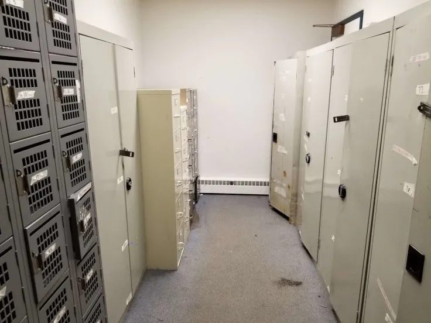
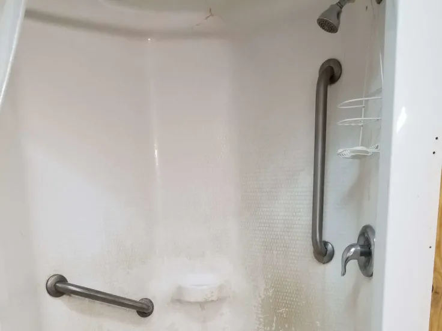

Veterans Coming Home Center
A Division of New Life Evangelistic Center
We Provide These Essential Services


Day Shelter
Whether it's scorching heat, freezing rain or heavy snow the homeless are welcome to escape from inclement weather in our shelter. Our mission is to provide a safe haven for homeless veterans and civilians who are forced to live on the streets. Our building is an established community where we strive to support our brothers and sisters in any way we can. We do this by accepting anyone no matter where they're at in life.


Computer Access
We provide computers for job searching, housing applications and connecting with family. Having the ability to access the internet when living on the streets is vital to taking steps to help ones self. It's easy to lose a phone and not have any way to reach out to those that can help you most. Even getting a library card to access public computers can be difficult when you are homeless.

Receive Mail
A homeless individual can put our day shelter as their mailing address. This essential service helps men and women receive important documents and other critical information. You cannot apply for a job, housing or federal benefits if you don't have an address. They can send and receive mail Monday through Saturday throughout year.


Lockers
We provide a substantial amount of lockers for both men and women. This is a central location where they can securely lock up personal items. One thing that most people don't think about is how hard it is to drag around all your possessions. Lockers are really hard to come by when you're homeless and theft is quite common when living on the streets.

Showers
We provide showers for men and women on a daily basis. Cleanliness is an important part of human dignity. When you become homeless, it's much harder to have a daily routine of cleanliness. Providing showers gives back a small portion of respect for yourself. There are places few and far between where a homeless man or woman can clean themselves in a proper way.

Laundry
The first judgment made on a person's character is based on the cleanliness and style of their clothes. Because this is part of human nature, the homeless are often stigmatized for their dirty clothing. Having access to laundry services is really important for many reasons. A man or woman have a higher chance of getting a house or job if they look presentable during the interview. Having clean laundry also gives human dignity back to the homeless.
Meals
We provide breakfast and lunch every Monday through Friday, and lunch on Saturdays and Sundays. Eating a free meal is not only encouraging for the homeless, but in some cases even lifesaving. As the only day shelter in Springfield, we consistently provide meals for those who don't have anything.

Free Store
Our facility provides a wide range of necessary care items for the homeless. We are only able to provide so much because of the constant gracious giving of local support. There is always a need for certain items in our free store. Please refer to the donate page for more information.

Library
We have a fairly large selection of books in a secluded section of our building. This library is a free service that allows homeless to relax or learn from the books donated. Books are an excellent way to learn a new skill, take your mind off other stresses or continue your education. This space is also a quiet place to pray or meet with other friends in private.

Rest Area
One of our major goals as a ministry is to provide a sanctuary for those who are cast out by society. At the VCHC we provide a rest area where homeless can watch TV, rest with friends and play board games. Our rest area is comfortable and safe and we welcome any to find sanctuary in our building.

Sleeping Area
Living on the streets can be quite exhausting. Being moved from area to area by the police and other occupants is frightening, stressful and burdensome. We provide an area where any can safely sleep throughout the day. Sleep is an all important part of surviving and when you're homeless it's hard to get sleep.